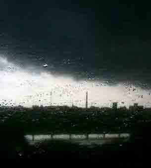

曾经，有一种连鸵鸟都不如的鸟，整天叫唤的是所谓的阶级斗争，一般，被叫唤的，都是不大放心的。即使是鸟，也不会整天去叫唤“鸟是鸟”来证明鸟的存在。就像谁用谁知道，要叫唤的，都是不行的。真行的，都不叫唤，直接干就完了。所以会叫的鸟，不是什么好鸟，狗也一样。
还有一种连鸵鸟都不如的鸟都不如的鸟，整天叫唤的是所谓的没有阶级斗争，按照上面的逻辑，被叫唤的都是不行的，没有阶级斗争的叫唤，也只不过去证明阶级斗争的无须叫唤。就像太阳的升落，不管你叫唤与否，该怎样还是怎样。有些事情和叫唤没关系，叫唤的没意义，不单单是表现在某些特殊行业特殊场地特殊场合上的。
抹杀阶级斗争就是真正的阶级斗争，即使是鸟，一个有阶级斗争，一个没阶级斗争，凭这就能打到满天鸟毛，何况是人？但人，经常连鸟都不如，鸟至少能打到满天鸟毛，人最多就张大口对天交换一下空气。交换空气的叫唤，永远不是真正的交换。真正的交换，交换的是血、是牙。历史就是这样的，历史里都是血和牙，即使把人炼成了鸟，历史还是历史。
就让叫唤继续交换，交换继续叫唤，但交还的都要交还！出来混，该还的还是要还的，连黑老大都明白的道理，赤橙黄绿青蓝紫，谁不明白？看，一道白光，紫蓝青绿黄橙赤，血绽在历史的尸布上，颜色是黑的！历史，正特殊行业特殊场地特殊场合地叫唤了！
人民战争，月经般的错误，护舒宝般的粉饰！